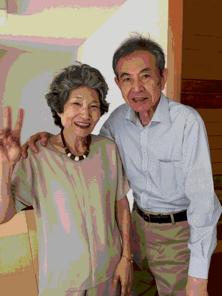
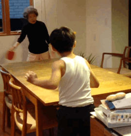
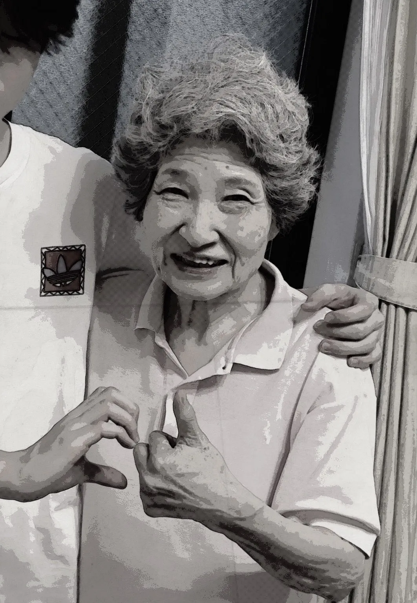

〜Life as a Grandma おばあちゃんとしての人生〜
Grandma is 88 years old, born in Kanagawa prefecture in 1936. Her husband was a high school classmate. She married at the age of 23 and has three children. While her husband works as a photographer, she was a dressmaker and made clothes for her children.


She experienced the Great Hanshin Earthquake when she was 55 years old. Although her home and the building she owns remained safe, her life continued to be inconvenient for a while. When her children became adults, she lived in Osaka prefecture with her husband for a while, but her husband developed dementia and had to live in care. Her three children are all married and have 6 grandchildren.



Grandma
* Shigeko Ichioka
* Born in 1936